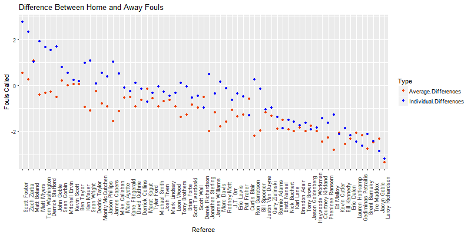
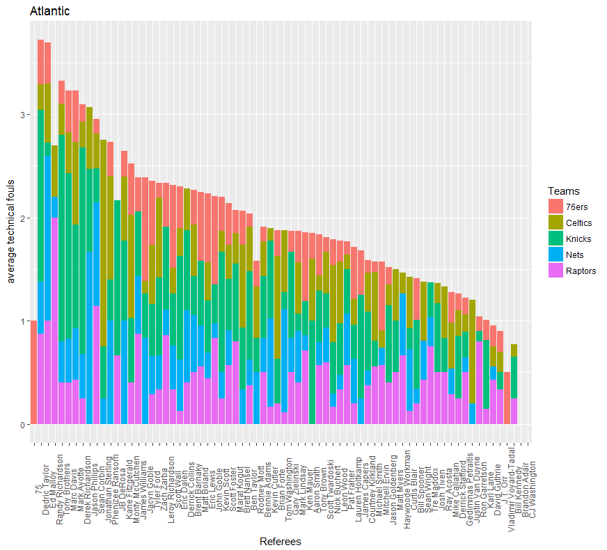
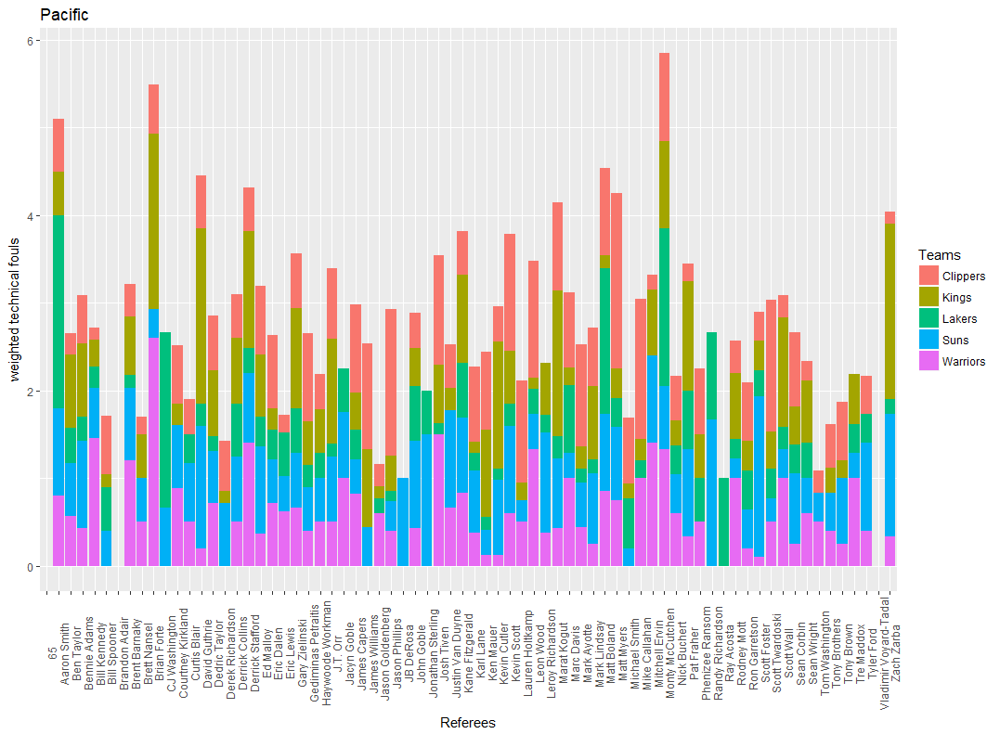
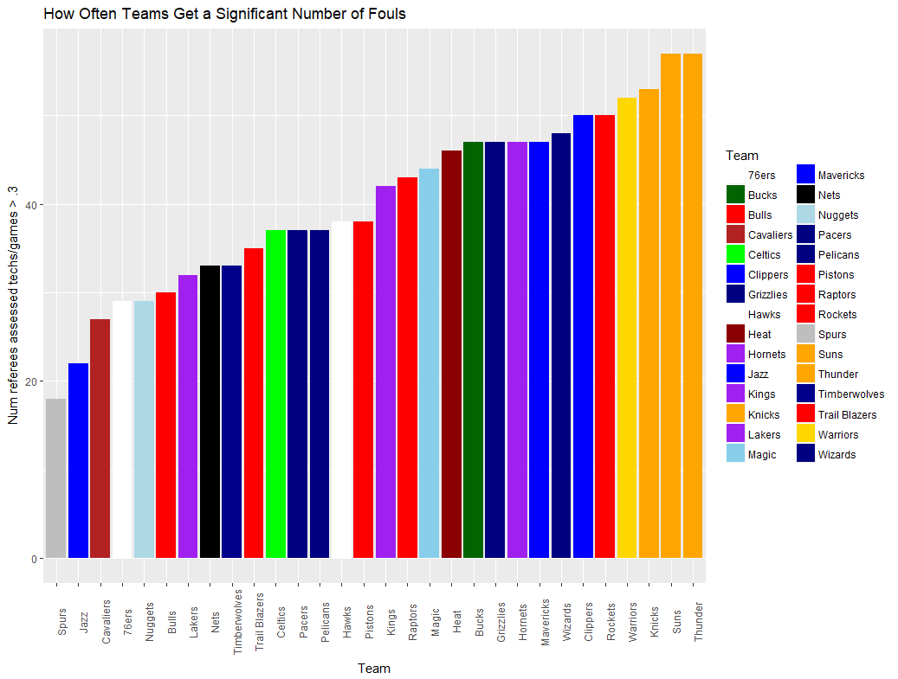

Halfway through the NBA 2017-2018 season, one of the most noticeable differences of this season from previous ones is the growing divide among players and referees' opinions of the decision of certain officiating calls. This has resulted in heavy criticism of the officiating jobs done by the referees by the players. So, we tried to look into the statistics of the referees' foul calls and technical foul calls from the past few seasons to see if there were any inconsistencies.
Part 1: Common Fouls and Home Court Advantage

- On average, home teams (listed in black) get called for about 19.69 fouls, while away teams (listed in red) get called for more fouls, at 20.89.
- For a majority of the referees, home teams get an advantage because they are called for fewer fouls than the visiting team.
- However, this does not account for the fact that referees work in group of threes, so a referee working with another referee who makes many calls will also increase their foul calls in this chart.

- From the previous graph, we adjusted for the fact that other referees make their own calls, which can increase the number of foul calls for the other referees on the court. We adjusted this using least square approximation which led to an estimation of the number of foul calls an individual referee will make.
- For instance, in the first Celtics@Cavaliers game, for referees Monty McCutchen, Michael Smith, and Brian Forte, the total number of foul calls they called on the visiting team was 24. Let the number of calls that Monty McCutchen made be x1, the number of calls that Michael Smith made be x2, and the number of calls that Brian Forte made be x3. Then the number of calls can be represented by x1 + x2 + x3 = 24. Taking this equation from every game in the season, we minimized the square error for each referee to get the number of calls that each referee makes.
- As you can see from the results of this graph and the previous one, referees Kevin Cutler and Leroy Richardson have wide discrepancies between the number of calls they give for the home team and the number of calls they give the visiting team.

- The graph measures bias by calculating home team fouls - away team fouls for each referee.
- More positive numbers mean that the referee favors the away team over the home team, while more negative numbers mean that the referee favors the home team over the away team.
- The blue points indicate individual bias using our previous model with individual contributions, while the red points indicate the average bias that the referee is involved in.
- By our calculations, Scott Foster favors the away team the most of all referees, and Leroy Richardson favors the home team the most. If you are cheering for the home team, your team will be most favored by the referees on the right of the graph, like Leroy Richardson.
Part 2: Techncial Fouls Against Certain Teams
Techncial fouls are penalties assessed to players and coaches as a result of unsportsmanlike conduct or disrespect to the game. Examples of technical fouls are fighting, arguing with officials, and taunting. The problem with such definitions is that it is very vague as to what crosses the line for unsportsmanlike conduct. It is dependent on the referees' judgement rather than a strict rule defining a clear line. Therefore, a referee's bias might influence the game one way or another by unfairly calling technical fouls in order to punish a team. As a result, we gathered data on which referees officiated games where technical fouls were called and found which teams might be punished more heavily than others by the referees.
- This graph shows the averaged number of technical fouls that each referee gives to each team. We calculated the number of technical fouls each referee team gave to a basketball team and then divided it by the number of games that referee officiated a game the team played in. The teams shown in this graph are the teams in the Atlantic Division, for simplicity purposes. As you can see, the green lengths of each bar are quite longer than others, showing that the Knicks' behavior warrants more technical fouls, as shown by the distribution among all the refs.
- However, the inconsistency in officiating is shown by the fact that referees such as Dedric Taylor give out more techncial fouls than other referees. His standard for what he believes warrants a technical foul is much lower than other referees because he gives them out much more.
- As a result, hotheaded teams such as the Knicks will suffer more from this part of the NBA rulebook which involves the referee's personal opinion about what constitutes a technical foul.

- This graph shows the same type of data as the graph above. However, this bar graph shows the technical fouls for the Pacific Division.
- Another interesting type of inconsistency arises with the distribution of the technical fouls for the Clippers. Approximately half of the referees give the Clippers a lot of technical fouls. In fact, many referees give the Clippers on average about half of all the technical fouls that they give the Pacific Division.
- However, the inconsistency arises with the other half of the referee body. Many referees give the Clippers so few technical fouls in comparison to the other teams in the Pacific Division that they are the smallest distribution for that referee's average. This shows that the rules for what deterine a technical foul are almost completely dependent on what the referees's personal beliefs are for what warrants a technical foul.

- This graph is a measurement of how often referees assess technical fouls to each team. We calculated this by calculating a percentage of referees that assess more than 0.3 technicals to a team per game.
- Teams such as the Thunder, the Warriors, and the Clippers all get a large amount of instances in which they get more than 0.3 technicals from a referee per game. These are the teams that get the most amount of disrespect from the referees.
- On the flipside, teams like the Spurs, who are known to be a team made up of mostly revered veterans, get fewer technical fouls. These are the teams that get the most amount of respect from the officials.